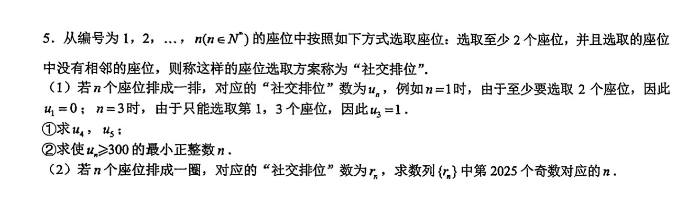

概率递推
A¶

设 \(a_i\) 表示长度为 \(i\) 的线性排列的合法方案数（不考虑至少两个的限制），那么有 \(a_n = a_{n - 1} + a_{n - 2}\)，初值为 \(a_0 = 1, a_1 = 2\)，不难发现这就是斐波那契数列向右平移后的结果。
减掉不合法的方案，得到 \(u_n = a_n - (n + 1)\)。直接枚举即可得到第一问的答案。
考虑第二问，区别在于 \(1\) 和 \(n\) 不能同时选，减掉这种不合法的方案即可。发现同时选择 \(1\) 和 \(n\) 时， \(2\) 和 \(n - 1\) 都不能选，那么方案数为 \(a_{n - 4}\)。
故 \(r_n = u_{n} - a_{n - 4} (n \ge 4)\)，同时显然 \(r_1=r_2=r_3=0\)。
进一步化简可得 \(r_n =a_{n - 2} + 2a_{n - 3} - (n + 1)\)，然后找规律。发现从 \(r_4\) 开始，奇偶性周期为 \(6\)：偶奇奇奇偶偶。容易计算答案。